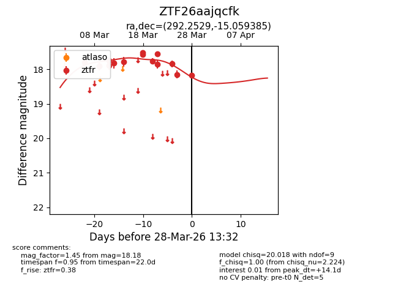
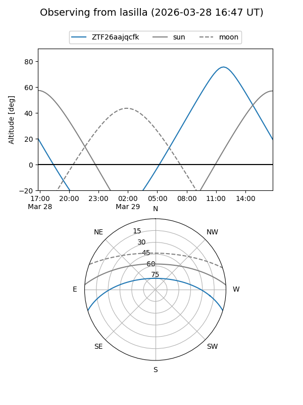
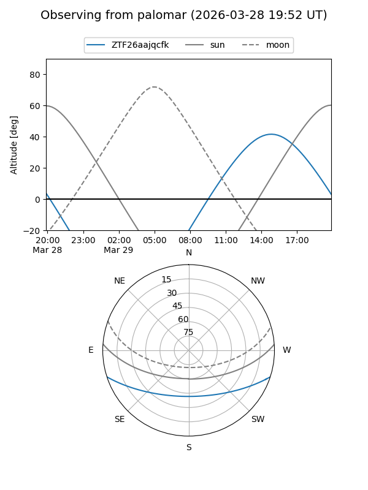
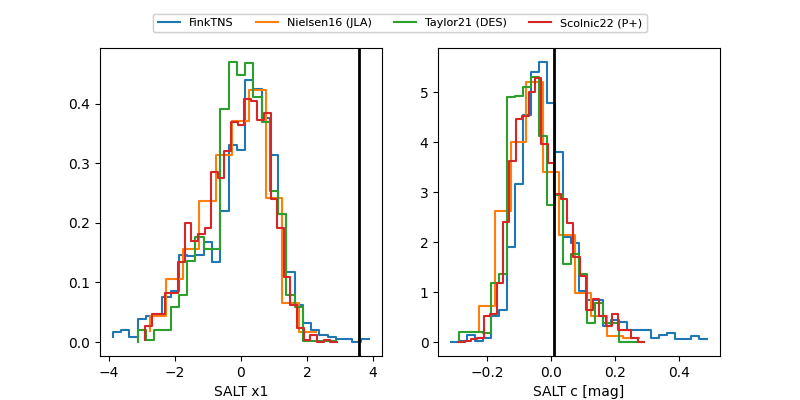

ZTF26aajqcfk
Target ZTF26aajqcfk at 2026-03-28 13:35
Aliases and brokers:
FINK: link
Lasair: link
ALeRCE: link
alt names
ZTF26aajqcfk (ztf,fink_ztf)
Coordinates:
equatorial (ra, dec) = 292.2529,-15.05939
equatorial (HMS+DMS) = 19:29:00.69,-15:03:33.79
galactic (l, b) = (23.4353,-14.99545)
Flags:
Photometry:
last ztfr=18.18
14 ztfr detections
Lightcurve

Visibility


Additional plots
